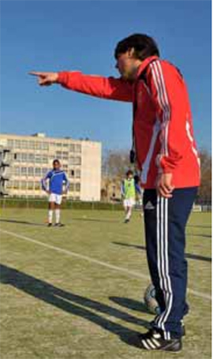

Sports
Au Pôle Espoir Talence, défis en vidéo
Benoît Michelena. PHOTO E. D
U19 - Angers qualifié en Youth League
Championnat stoppé, les U19 nationaux des Girondins ont donc terminé à la 10e place de leur poule, loin (20 points) derrière le leader Angers. L’organisation de phases finales étant impossible, la FFF a décidé de désigner le « champion » 2019-2020, qui accompagnera en Youth League les trois équipes qualifiées via les pros, par un classement entre les quatre premiers de poule sur la base du quotient nombre de points/matchs joués face aux autres membres du top 5 de leur groupe.
À ce petit jeu, c’est Angers qui devance Le Havre, Sochaux et Monaco et qui connaîtra pour la première fois la Coupe d’Europe U19. La Coupe Gambardella a elle aussi été stoppée. Le SA Mérignac, seul club amateur encore en lice, devait recevoir le FC Nantes.
La nouvelle de la fermeture des écoles est tombée le jeudi 11 mars au soir. Celle de l’arrêt des activités du foot le lendemain. Les 32 pensionnaires du pôle espoirs football de Talence, « générations 2005- 2006 » et issus de toute la Nouvelle-Aquitaine, sont rentrés dans leur famile le vendredi soir et ne sont donc plus revenus depuis. Les responsables ont dû s’adapter et le lien avec les jeunes footballeurs de 13 à 15 ans, scolarisés en 4e et 3e au collège Victor-Louis à Talence (33) et logés toute la semaine en internat au CREPS, est numérique.
« On a fait un programme d’entretien par quinzaine au fil des orientations gouvernementales, explique Benoît Michelena, le directeur. On a déjà un groupe WhatsApp commun à l’année, on les appelle régulièrement individuellement et on organise en plus chaque semaine un rendez-vous visio avec prise de parole, partage de leur expérience et de leur réflexion sur les nécessités au pôle, de footballeur. » Petit bonus : « on leur donne des challenges techniques, ou physiques à filmer pour entretenir l’émulation, le lien » poursuit le formateur.